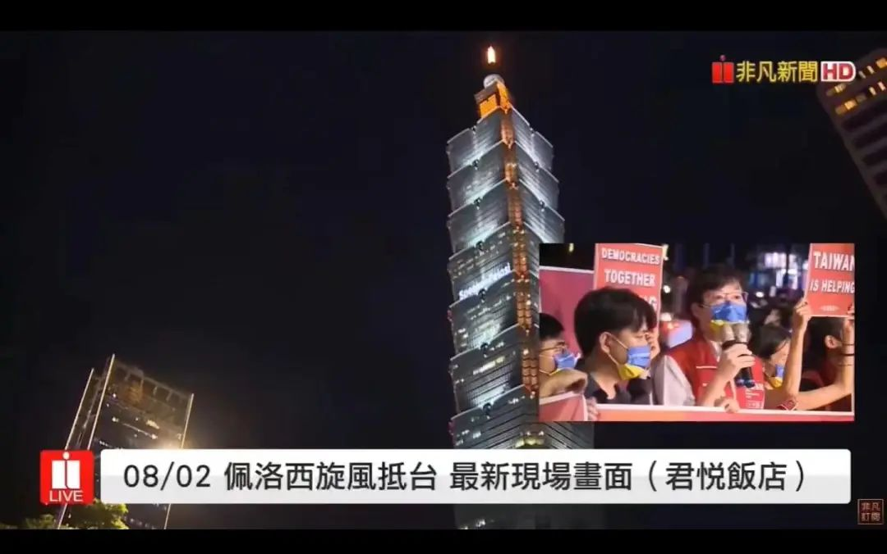

原来是老把戏
原创 V姐万事屋 V姐来了 2022-08-04 23:27 发表于上海
原文链接(长) 原文链接(短)
Hi, 我是V姐。
今天可谓炮火连天，欢度七夕。
大家肯定知道了，解放军实弹演习动作很大。除了增加之前没有去过的区域，掐断台湾出海航道之外，还发射东风快递，飞跃台湾，精准击中台湾岛以东海域。
这么一搞，海峡中线彻底没了，台湾海空实际上全面在我们控制之下。
美国不遵守中美三个联合公告在先，老太婆前脚刚走，后脚我们360°放烟花。
以前我们称对岸台湾方面，现在直接台湾省台中市。之前台湾单方面否认九二共识，现在好了，我们干脆也不提了。
和统的可能性已经无限接近0，既然如此，惠台政策也没有什么必要了，商务部已经牵头，该不买就不买，该不卖就不卖。
**锁台穷台，一个虚弱甚至内乱的台湾，可以让我们梧桐的难度降到最低。**
老实说，没有前面这出大戏，我打出上面两行字，内心会有更多不忍。
今天我在看央视新闻的演习视频时，我女儿凑过来说，哎呀，怎么朝台湾发射导弹啦？我们不是同胞吗？
是的，两岸一家亲，是同胞，是血浓于水，这些是新中国每一代小学生课本上的内容。
其他我不清楚，至少我这代人，过去脑海里和统是占据主要位置的，希望有办法能不战而屈人之兵，尽量不伤亡少伤亡。
不少朋友2号晚上气得睡不着，一时就跟着外网甚至湾湾网民的节奏跑了，开始阴阳怪气嘲讽技能拉满。
看到这样的场景，你真的确定，如果真打了，对于血肉横飞的惨烈场面，我们的民众做好心理准备了吗？
到时候，先弄两账号，发个微博：愿意收留无家可归的年轻台妹！
万转，恶心的国腩，底层男女先割裂。
然后呢，发个移花接木的小朋友伤亡视频，拍马辟谣都跟不上。
万转，圣母跳反，指责我们灭绝人性。
再来，发老同志伤亡视频，编个故事讲述他牵挂祖国统一的一生，最后没想到是这个结局。
万转，高贵文艺界公知痛心疾首。
剧本我都给写好了，个个都自带流量，不火包退。
一时间，你以为的同仇敌忾，突然就分化了。
所以舆论战舆论战，不是跟台湾打，是我们自己内部，要有定力。
屈辱的事情多来几次，心里的怒火多积蓄一点。
2号晚上，对岸接机老太婆的年轻人，拿着喇叭说，中方的红线，变成了今天迎接佩洛西的红毯！

这个画面，刻在更多人的脑子里，我当你同胞，你当我煞笔。有一天真打起来，谁有脸站出来同情这些人呢？
我们中学时学过一个故事： **郑伯克段于鄢。**
郑庄公的母亲偏爱次子段，纵容其篡位。郑庄公心知肚明，按兵不动，静观其变，诱使其得寸进尺，愈发骄横，于是有一天师出有名，克段于鄢。
总之老太婆这个事，你说是不是一盘大棋，没人知道。
只能说现有的形势看，我们拿了里子，美国拿了面子，至于台湾，你忍忍，退一步海阔天空。